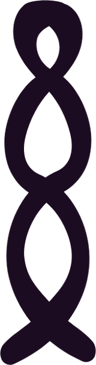

A Teaching by Christopher Hager
The Chakras
a map back to yourself
Seven centers, root to crown. What each one is asking, what it looks like when it's flowing, what it looks like when it's blocked, and where to begin.
A Teaching by Christopher Hager
a map back to yourself
Seven centers, root to crown. What each one is asking, what it looks like when it's flowing, what it looks like when it's blocked, and where to begin.
 Start at the bottom
Start at the bottom
"Most people want to talk about the third eye, the crown, the mystical stuff. Meanwhile their root chakra is on fire, their nervous system is wrecked, and they haven't felt safe in their body since 2007. And they're wondering why they're not having a more mystic experience."
The system is old, it is precise, and it is far more practical than its reputation. Chakra means wheel, or disc: centers of prana, life force, sitting at specific places in the body.
"So it really took about 3,000 years to go from the Vedas to our local yogic studios."
"A lot of times they're represented as flowers. I really like to think of them as weather systems. Or doors. They're always active, there's always influence from them. And the question is whether or not you're actually paying attention."
So the flowers are here, seven lotuses, because that is how the tradition draws them. Read them as weather. Each one has a forecast, and it is always telling you something about the terrain you are walking through.
"It's not just spiritual theory. It's a diagnostic tool for being a human being."

The one idea
"None of us are really becoming anything. We are remembering who we are."
"Before the conditioning, before the lies, before the wounds, before all of the traumas, these different pieces of your human experience were here. And when we work through these centers somatically, energetically, psychologically, we're not adding something new. We're removing all of the things that were never true."
"When you start to look at a blocked chakra, it's not a flaw. It's a doorway."
"You don't have to believe or change anything to work with the chakras. They don't really care about your skepticism. They've been humming along for about 3,000 years."
 The seven
The seven
Each center asks one question. Choose one to see what it governs, how it reads when it's flowing, how it reads when it's blocked, and the practice that opens it.
Everything in quotation marks is mine, spoken in the live teaching.

The architectureThis is what turns seven centers into a system instead of a list. Each one asks a question, and each question stands on the one beneath it. Read it from the bottom.
Tap any rung to open that center
"Without safety, it's hard to claim your sexuality, to claim your power, to claim your heart, to claim your voice, to claim your vision and your gifts, and then to receive."
The bridge
The lower three are earth, body and power. The upper three are expression, vision and transcendence. The heart sits between them, and every crossing goes through it.
"Anahata literally means unstuck. How beautiful is that?"
The gate
"The third eye doesn't open on demand. It does when you've done the work of those other five chakras."
"There's always an exception to that rule. And I'm not really happy that I was the exception to that rule."
 The exception to the rule
The exception to the rule
"December 10, 2022, I cracked open. I started to channel. And at the time I was not rooted at all. I had a seven figure job, I was in charge of 953 people, and I had every single thing you could possibly want on paper. But I was miserable."
"And so what happened when I cracked open up at the top, my root was not solid. And I ended up having an overdose. I overdosed on ketamine and I had to go into rehab."
"And within two weeks of going into rehab I looked around, and all the things they were teaching me were about rooting."
"The tree of Christopher Hager just crashed onto the floor."
"I thought that I'd been buried.
But really, I'd been planted."
"A lot of times when we're shrouded in darkness, we think we've been buried. But really, you've been planted. And the only way to grow from that planting is to make sure that your roots are in there."
Two threads through all seven
Slow and anchoring at the bottom. Faster, then held, as you rise. And at the top, no technique at all.
"Nature has just left all kinds of recipes out there for us." Eat the colour of the center you're working.
 A check-in
A check-in
Seven questions, one per center. Don't think too hard: lean toward the side that's more true today. Your lotuses open or close as you answer, and at the end you'll see which center is talking loudest.
This is a mirror. It isn't a diagnosis, and nothing you choose here is saved or sent anywhere.
Seven centers · One body · One life
"You were never broken. You were never separated. You were always just here."
"You were exactly what you're looking for. And you just forgot."
"And then you get to enjoy that. Oh, I forgot. And I'll forget again. And then I'll have the pleasure of remembering again."
"As Forrest Gump once said: that's all I have to say about that."
If any of this landed on a specific center for you, that's the one that's talking. I'd be glad to tell you what I see in it.
Book a session